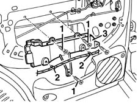
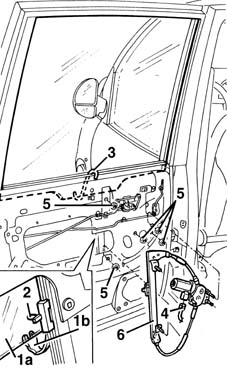

7010M20 repeair side door electrically operated window motor - r r with door panel-mount frame removed
- Path
- Procedures > 70 FITTINGS > 7010 PASSENGER COMPARTMENT REAR SIDE DOORS > 7010M rear electric windows > 7010M20 repeair side door electrically operated window motor - r r with door panel-mount frame removed
- Kind
- repair procedure (removal / refitting; the operation number is the code)
- Applies to
- all engines; all production periods
- Interactive page
- https://sloeber94.github.io/elrnDB-fMltpl/en/#/2892102
Applies to: all engines; all production periods
 Removing
Removing
 Refitting
Refitting7010A04 rear side door water guard protection - r r or arrange with door panel removed
1. Undo the bolts.
2. Disconnect the wiring from the retainers.
3. Remove the bracket.

Applies to: all engines; all production periods
1. Open the window (1a) about 1/4 of the way, then disconnect the window safety retainer (1b).
2. Disconnect the window from the drive pin.
3. Raise the window manually to the closed position; to prevent it descending accidentally, fit a supporting hook as shown in the figure.
4. Disconnect the electrical connection of the electric window motor.
 | Name | Connector |
|---|---|---|
4 | Rear left electric window motor |
| Name | Connector |
|---|---|---|
4 | Rear right electric window motor |
5. Undo the electric window unit nuts.
6. Remove the electric window unit from the door frame.

Applies to: all engines; all production periods
Refitting
RemovingCheck the condition of the electrically-operated window and ensure the motor is working properly.
Refit the electric window unit in the door frame, fixing it with its nuts.
Connect the electrical connection for the electric window motor.
Remove the window support hook.
Open the window about 1/4 of the way, then connect it to the drive pin.
Connect the window's safety retainer.
Check that the electric window works properly.
7010A04 rear side door water guard protection - r r or arrange with door panel removed
Topics linked from this page (3)
- 7010A04 rear side door water guard protection - r r or arrange with door panel removed
- N65 Rear left electric window motor
- N66 Rear right electric window motor